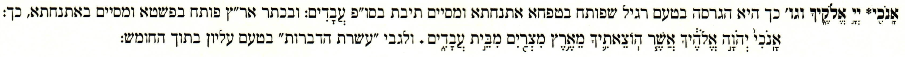

לקרותו כשמסיים
ברביע כמובא בפנים,
יש ספרים שנקרא כמו
בטעם תחתון, כיון שע״פ
המסורה צ״ל כאן יו׳ד
דברות, כך: אָֽנֹכִ֖י יְהֹוָ֣ה
אֱלֹהֶ֑יךָ אֲשֶׁ֧ר הֽוֹצֵאתִ֛יךָ
מֵאֶ֥רֶץ מִצְרַ֖יִם מִבֵּ֥ית
עֲבָדִֽים׃ [עשרת הדברות
בלא טעם עליון בסוף
החומש].
The two Decalogues are each chanted two ways -- the טעם תחתון (taḥton, ordinary-length verses) and the טעם עליון (elyon, one verse per commandment) -- and the printed editions accent the opening commandment differently from the Tiberian manuscript. The companion page (issue #52) grammar-checks all four printed-vs-manuscript readings; this page ports two marginal notes from Simanim's Tiqqun that independently attest which tradition Simanim follows (formerly two comments on issue #56).
The two notes mirror each other. The main-text note (p. 83) sits beside the elyon Decalogue and, on its own testimony, gives the merged nine-verse printed elyon as its default; the appendix note (p. 246) sits beside the taḥton Decalogue and prints the printed taḥton (in which אנכי…עבדים is its own verse). Each even points at the other. Taken together they show Simanim carrying the printed tradition on both strands -- so the Simanim scans are independent printed-tradition witnesses, not merely an echo of MAM's own note.
The manuscript and printed traditions accent the Decalogue's first unit differently, and the two טעמים are effectively reassigned by one notch at the first commandment. Reading each Exodus version's first chanted verse straight from the vendored data and deriving the accent on its first word (אנכי) and on עבדים. The accent on עבדים is what decides the structure: a silluq + sof pasuq there ends the verse, so אנכי…עבדים stands as its own verse; an etnaḥta or revia there is mid-verse, folding אנכי…עבדים into a longer verse.
| reading | אנכי | עבדים | structure |
|---|---|---|---|
| manuscript taḥton MAM א | אָֽנֹכִי֙ (pashta) | עֲבָדִ֑ים (etnaḥta) | merges אנכי…פני into one verse |
| manuscript elyon MAM ב | אָֽנֹכִ֖י (tipeḥa) | עֲבָדִֽים׃ (silluq / sof pasuq) | אנכי…עבדים its own verse → 10 verses |
| printed taḥton | אָֽנֹכִ֖י (tipeḥa) | עֲבָדִֽים׃ (silluq / sof pasuq) | אנכי…עבדים its own verse (= manuscript elyon) |
| printed elyon | אָֽנֹכִי֙ (pashta) | עֲבָדִ֗ים (revia) | merges commandments I + II → 9 verses |
A note in the margin of the Exodus (Yitro) Decalogue, on אנכי…עבדים.
| Source scan | Transcription |
|---|---|
|
| [ב] פסוק ראשון נהגו לקרותו כשמסיים ברביע כמובא בפנים, יש ספרים שנקרא כמו בטעם תחתון, כיון שע״פ המסורה צ״ל כאן יו׳ד דברות, כך: אָֽנֹכִ֖י יְהֹוָ֣ה אֱלֹהֶ֑יךָ אֲשֶׁ֧ר הֽוֹצֵאתִ֛יךָ מֵאֶ֥רֶץ מִצְרַ֖יִם מִבֵּ֥ית עֲבָדִֽים׃ [עשרת הדברות בלא טעם עליון בסוף החומש]. |
[ב] {Regarding} the first verse — it is the custom of some to chant it as ending on a revia, as given in the main text (בפנים); {but} there are editions that call for it to be chanted as in the lower (taḥton) accentuation {specifically the printed taḥton — see the four readings above}, since by the Masorah there must be Ten Commandments here — thus: {אנכי…עבדים as its own verse, shown above, with silluq + sof pasuq at עבדים}. [The Ten Commandments without the upper accentuation appear at the end of the Ḥumash.]
Notation: text in {curly braces} is our editorial addition; [square brackets] reproduce brackets present in the source itself.
Simanim's default (בפנים) elyon reading thus ends the first unit on a revia — the merged, nine-verse printed structure — and only “some books” restore אנכי…עבדים as its own verse (silluq + sof pasuq at עבדים) to keep ten dibrot. On its own testimony, Simanim follows the printed tradition for the Decalogue elyon.
The mirror note, from the appendix's taḥton Decalogue (which Simanim heads only negatively, בלא טעם עליון, “without the upper accentuation”). It sits under the section running-head מענה לשון (maʿaneh lashon, Prov. 16:1 — a generic notes-section title), on the lemma אנכי.

מענה לשון
אָֽנֹכִ֖י* יְיָ֣ אֱלֹהֶ֑יךָ וגו׳ כך היא הגרסה בטעם רגיל שפותח בטפחה אתנחתא ומסיים תיבת בסו״פ עֲבָדִים: ובכתר אר״ץ פותח בפשטא ומסיים באתנחתא, כך: אָֽנֹכִי֙ יְהֹוָ֣ה אֱלֹהֶ֔יךָ אֲשֶׁ֧ר הֽוֹצֵאתִ֛יךָ מֵאֶ֥רֶץ מִצְרַ֖יִם מִבֵּ֣ית עֲבָדִ֑ים. ולגבי “עשרת הדברות” בטעם עליון בתוך החומש:
The bold lemma reproduces the appendix's own body text, asterisk and all, except that the note writes the Tetragrammaton as the double-yod יְיָ where the body has יהוה.
Maʿaneh Lashon. “אנכי יי אלהיך …” — Such is the version in the ordinary accentuation, which opens with tipeḥa–etnaḥta and ends with the verse-final word — at sof pasuq — עבדים; but in the Keter Aram Tsova it opens with pashta and ends with etnaḥta, thus: {the merged reading אנכי…עבדים shown above}. And as regards the “Ten Commandments” in the upper accentuation within the [main body of the] Ḥumash: …
The note contrasts two accentuations of the first unit, both already in the table above:
| the note's label | אנכי | עבדים | = four-readings row |
|---|---|---|---|
| בטעם רגיל (ordinary) | tipeḥa | sof pasuq | printed taḥton = manuscript elyon |
| כתר אר״ץ | pashta | etnaḥta | manuscript taḥton (MAM א) |
So Simanim's appendix, in its own editorial voice, draws the printed-vs-manuscript taḥton distinction directly: what it prints and calls the “ordinary” taḥton is the reading in which עבדים carries silluq + sof pasuq (אנכי…עבדים as its own verse) — the reading whose marks are the manuscript's elyon, while the genuine manuscript taḥton — the merged pashta…etnaḥta reading — it sets aside in the note. Independent, printed-tradition confirmation that “read it like the taḥton” means the printed taḥton, since Simanim itself shows it knows the two taḥtons differ.
Simanim's Tiqqun carries the printed elyon in the main text of its Decalogues and the printed taḥton in its appendix. Both marginal notes are independent printed-tradition witnesses to the reading in which עבדים carries silluq + sof pasuq (אנכי…עבדים as its own verse) — the reading the printed tradition itself labels “taḥton,” which is what lets the issue #52 finding rest on more than MAM's own note alone.
The four readings are read live from the vendored MAM data in/accgram/printed_decalogue_teamim.json (revision 2810844, 2023-10-22) — each Exodus version's first chanted verse, with the accent on אנכי and עבדים derived from its marks. The two Simanim transcriptions are hand-set from the committed scans (they diverge from MAM). All content is credited to MAM and the vendored data.